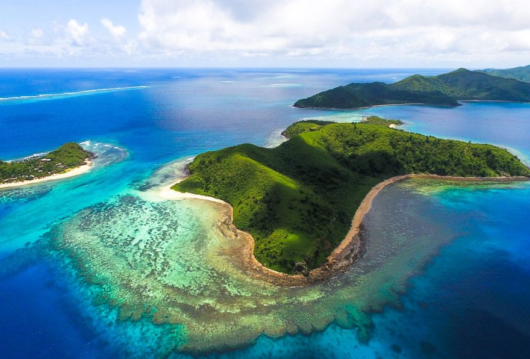

For the perfect holiday, choose from affordable accommodation all the way through to exclusive 5 star resorts, bunk down in a hostel or book an island to yourself. Famous for its soft coral diving, white sand beaches and pristine natural environment, Fiji is a leader in eco-tourism. For business travel there is no better place halfway between North America and Asia. Weddings and honeymoons in Fiji are heavenly and families and children have a special place here.
In Rome, classical ruins and early Christian places of worship stand next to – or lie beneath – Renaissance palazzos and Baroque fountains. But there are also great neighbourhood trattorias, quirky shops and a buzzing aperitivo scene. The city’s mild Mediterranean climate is another persuasive draw for visitors from the cool north, but for me the main draw will always be the pulsating energy of a place which lives life as a form of theatre.

Santorini, a volcanic island in the Cyclades that rests in the middle of the Aegean, is one of the most popular tourist destinations in Greece-- and for good reason. Travel to Santorini and you will be treated to sweeping, dramatic ocean views, pristine beaches, including the black pebble beach of Kamari, traditional Grecian architecture, fine dining, and numerous, excellent local wineries. The island is a well-known international vacation spot and attracts throngs of tourists during peak season, but its local charm and beauty make Santorini travel an unforgettable experience despite the crowd.